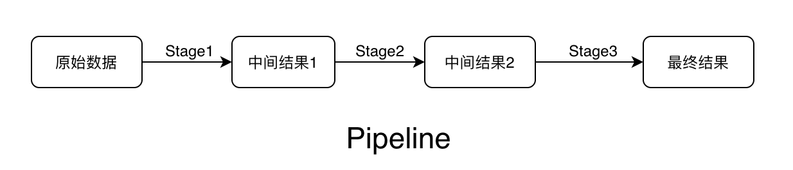

MongoDB中聚合操作是将查询到的数据通过一个流水线，经一次或多次处理后返回结果的操作。比如经过若干条件筛选后，分组统计平均值、求和等等。
Pipeline、Stage
1 | db.collection.aggregate( [ { <stage> }, ... ] ) |
Stage常见操作符
| Stage | 作用 | 对应SQL |
|---|---|---|
| $match | 条件过滤 | WHERE |
| $project | 投影 | AS |
| $sort | 排序 | ORDER BY |
| $group | 分组 | GROUP BY |
| $skip | 跳过 | SKIP |
| $limit | 结果限制 | LIMIT |
| $lookup | 左外连接 | LEFT OUTER JOIN |
| $unwind | 展开数组 | |
| $graphLookup | 图搜索 | |
| $bucket | 分桶 | |
| $facet | 多个聚合操作 |
所有操作符：MongoDB Manual - Aggregation Pipeline Quick Reference
各Stage对应的常见运算符
| $match | $group | $project |
|---|---|---|
| $eq/$gt/$gte/$lt/$lte $and/$or/$not/$in $geoWithin/$intersect …… |
$sum/$avg $push/$addToSet $first/$last/$max/$min …… |
$map/$reduce/$filter $range $multiply/$divide/$substract/$add $year/$month/$dayOfMonth/$hour/$minute/$second …… |
实操用例
测试数据结构：
1 | > db.orders.findOne() |
1. 基本功能
一些简单的查询操作使用普通的查询命令与聚合命令的对比
1 | > db.collection.find({lv:{$exists:true}}, {_id:0, user_id:1, lv:1}).sort({lv:-1})skip(1).limit(1) |
$sort、$skip、$limit顺序
2. 求和
求50级以上玩家总共有多少钱？
1 | > db.collection.aggregate([ |
3. 求平均
求10级以上的男性玩家的平均等级是多少？
1 | > db.collection.aggregate([ |
4. 数组展开
$unwind，操作符功能示例：
1 | > db.students.find() |
求所有玩家的游戏人物中，每种等级的角色总数？
1 | > db.collection.aggregate([ |
5. 分组统计
分段统计各个等级的玩家数目？
$bucket
1 | db.collection.aggregate([ |
6. 多表关联
$lookup，操作符功能示例：
1 | > db.product.find() |
1 | > db.product.aggregate([ |
MongoDB Compass
这是官方提供的一个GUI工具，用来做聚合操作非常直观方便。每一个Stage可以单独显示处理后的结果示例，可以方便的调试。